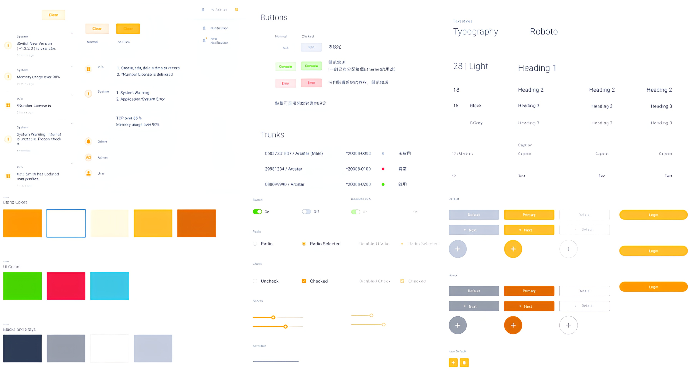
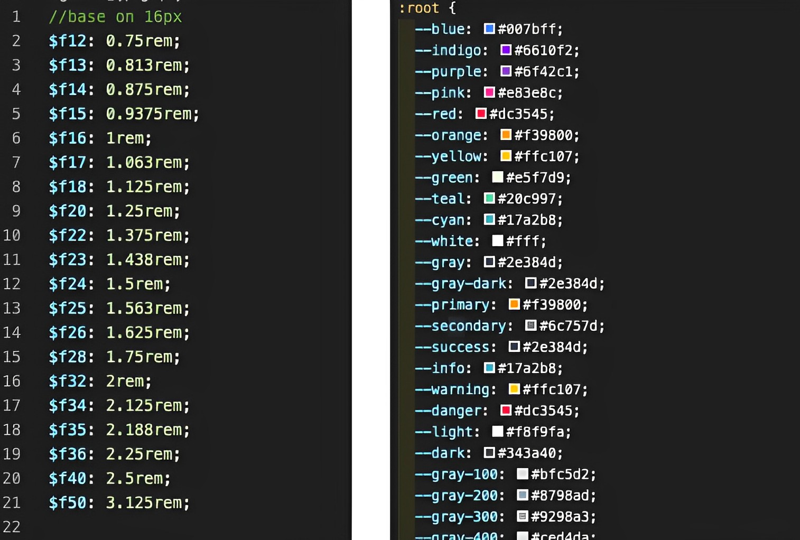

<!DOCTYPE html>
<html lang="zh-Hant-TW" class="no-js">
  <head>
    <meta charset="UTF-8" />
    <meta name="viewport" content="width=device-width, initial-scale=1" />
    <meta charset="utf-8" />
    <meta
      name="viewport"
      content="width=device-width, initial-scale=1, minimum-scale=1, user-scalable=1, maximum-scale=2"
    />
    <meta http-equiv="X-UA-Compatible" content="IE=edge" />

    <meta name="author" content="" />
    <meta name="description" content="Communication System - Backend Website,UX Research,UI,Prototype,Coding" />
    <meta name="keywords" content="UX Research,UI,Prototype,Coding" />
    <meta http-equiv="content-language" content="zh-Hant-TW" />

    <meta property="og:type" content="article" />
    <meta property="og:site_name" content="PEGGY PORTFOLIO" />
    <meta property="og:title" content="Communication System - Backend Website | Peggy Designer" />
    <meta property="og:description" content="Communication System - Backend Website,UX Research,UI,Prototype,Coding" />
    <meta property="og:image" content="https://q375ml.github.io/PEGGY-PORTFOLIO/images/peggy.jpg" />
    <meta property="og:url" content="https://q375ml.github.io/PEGGY-PORTFOLIO/uid.html" />

    <title>Communication System - Backend Website | Peggy Designer</title>
    <link rel="shortcut icon" href="logo.ico" title="logo" />
    <script>
      document.documentElement.className = 'js';
      var supportsCssVars = function () {
        var e,
          t = document.createElement('style');
        return (
          (t.innerHTML = 'root: { --tmp-var: bold; }'),
          document.head.appendChild(t),
          (e = !!(window.CSS && window.CSS.supports && window.CSS.supports('font-weight', 'var(--tmp-var)'))),
          t.parentNode.removeChild(t),
          e
        );
      };
      supportsCssVars() || alert('Please view this demo in a modern browser that supports CSS Variables.');
    </script>
    <!-- Bootstrap CSS -->
    <link
      rel="stylesheet"
      href="https://stackpath.bootstrapcdn.com/bootstrap/4.2.1/css/bootstrap.min.css"
      integrity="sha384-GJzZqFGwb1QTTN6wy59ffF1BuGJpLSa9DkKMp0DgiMDm4iYMj70gZWKYbI706tWS"
      crossorigin="anonymous"
    />
    <!-- css -->
    <link rel="stylesheet" href="css/styles.css" />
    <link rel="stylesheet" href="css/frame.css" />
    <link rel="stylesheet" type="text/css" href="css/base.css" />
    <!-- fontawesome -->
    <link
      rel="stylesheet"
      href="https://use.fontawesome.com/releases/v5.0.13/css/all.css"
      integrity="sha384-DNOHZ68U8hZfKXOrtjWvjxusGo9WQnrNx2sqG0tfsghAvtVlRW3tvkXWZh58N9jp"
      crossorigin="anonymous"
    />
    <script type="application/ld+json">
      {
        "@context": "http://schema.org/",
        "@type": "Article headline",
        "headline": "Website Design",
        "datePublished": "2020-08-03",
        "description": "Communication System - Backend Website,UX Research,UI,Prototype,Coding",
        "image": {
          "@type": "Article headline",
          "height": "",
          "width": "",
          "url": "https://q375ml.github.io/PEGGY-PORTFOLIO/backend.html"
        },
        "author": "Peggy Chiang",
        "publisher": {
          "@type": "Organization",
          "logo": {
            "@type": "ImageObject",
            "url": "https://q375ml.github.io/PEGGY-PORTFOLIO/index.html"
          },
          "name": "Peggy Chiang"
        },
        "articleBody": "When the company's design team is designing the interface of multiple products at the same time, the "consistency" between the product and the product is often an important consideration, because this not only affects the smoothness of the user's operation, but also affects the customer. Consistency in company brand perception. Ease of use, connectivity, security, scalability."
      }
    </script>
  </head>
  <body>
    <div id="modal-03" class="con">
      <!--"THIS IS IMPORTANT! to close the modal, the class name has to match the name given on the ID-->
      <div id="btn-close-modal" class="close-modal-03">
        <a href="index.html#portfolio"> <i class="far fa-times-circle"></i></a>
      </div>

      <article class="about">
        <section>
          <div class="content">
            <h2>
              Communication System - Backend Website
            </h2>
            <h3 class="pb-20 f20">UX Research・UI・Prototype・Coding</h3>
            <video width="100%" controls autoplay loop>
              <source src="images/video/backend.mp4" type="video/mp4" />
            </video>
            <h5>Project Details</h5>
            <h4>Description －</h4>
            <p class="pt-2">
              When the company's design team is designing the interface of multiple products at the same time, the "consistency" between the product and the product is often an important consideration, because this not only affects the smoothness of the user's operation, but also affects the customer. Consistency in company brand perception. Ease of use, connectivity, security, scalability.
            </p>
            <h4>Target TA －</h4>
            <p class="pt-2">
              B2B corporate communication services.
            </p>
            <h4>Role－</h4>
            <p class="pt-2">
              UI/UX designer, including UX Guideline, front-end collaborator HTML&CSS (SCSS), bootstrap, define css component.
            </p>
            <h4>Problem and Challenge －</h4>
            <p class="pt-2">
              The data of the switch system is too large and complex, and the original operation process in the background is not beautiful and does not conform to the current service form.
            </p>
            <h4>Goal－</h4>
            <p class="pt-2">
              Visibility, good operation behavior, processing data correlation screen presentation.
            </p>
            <h4>Deliverables －</h4>
            <ul class="ab_txt">
              <li>User research and internal interviews.</li>
              <li>The product manager provides simple functions and figures out the direction (screen steps) and goals of the entire function.</li>
              <li>Sketch，Wireframes & Mockups.</li>
              <li>Continue the existing design and systematize the design.</li>
              <li>Hi-fidelity Mockups.</li>
              <li>Usability testing.</li>
              <li>Assist engineers in HTML&CSS (SCSS), bootstrap, kit production, screen systematization, discuss effects, and work together.</li>
              <li>Review final screen.</li>
            </ul>
            <h4>Software－</h4>
            <ul class="ab_txt">
              <li>Sketch</li>
              <li>Overflow</li>
              <li>invision</li>
              <li>Illustrator</li>
              <li>Html</li>
              <li>CSS(SCSS)</li>
              <li>Bootstrap</li>
              <li>git(Source tree)</li>
            </ul>
            <hr />
            <h5 class="pt-0">Process</h5>
            <h4>Know the user:</h4>
            <p class="pt-2">
              To gain a deeper understanding of users, their motivations and pain points, I conducted internal QA interviews, surveys.<br>
              Therefore, the QA department, which has been using our switches for a long time, was selected as an early adopter.
            </p>
            <h4>Improve the following main pain points for users:</h4>
            <ul class="ab_txt pt-2">
              <li>Operation requires a teaching manual, adaptation time, often not very clear intuition.</li>
              <li>The picture is improved to be more beautiful, friendly, and the operation is clearer and more intuitive. Reduce message delivery time.</li>
            </ul>
            <hr />
            <h5 class="pt-0">Usability Test</h5>
            <h4>According to the product roadmap, to ensure the integrity of the UX Guideline content, I conclude that it should mainly include the following points:</h4>
            <ul class="ab_txt pt-2">
              <li>
                <b>Motivation and purpose of use:</b>
                <br />Explain under what circumstances this component is used, its main functions, and data relevance, and combine data content to bring users a good experience.
                
                <div class="center pb-3">
                  <h4>Whiteboard sketch</h4>
                  Receive a verbal description from the product manager, quickly draw functional sketches on the notebook and whiteboard, and confirm the project and the front-end and back-end engineers with the product manager to discuss the feasibility of the function.
                </div>
              </li>
              <li>
                <b>Situation and Style:</b><br />
                Sometimes a component may be presented with different functions and styles for different situational needs, considering different screen sizes, and refer to the UI Guideline.
                
                <div class="center pb-4">
                  <h4>Refer to the original UI Guideline.</h4>
                  
                  <h4>Use Bootstrap to assist in engineering CSS & SCSS settings.</h4>
                  
                  <h4>Desktop</h4>
                  <span class="block">Responsive Web Design</span>
                  
                </div>
              </li>
              <li>
                <b>Behavior and Process:</b><br />
                It is necessary to standardize the interactive behavior of users and components in more detail, including how to trigger components, follow-up processes of behaviors, special conditions, error warnings, etc.
                <div class="center pb-3">
                  
                  <h4>UI Overflow</h4>
                  After drawing the draft with sketch, use overflow to pull out the flowchart steps and write the description function.
                  
                </div>
              </li>
            </ul>
            <hr />
            <h5 class="pt-0">What did I learn from it?</h5>
            <h4>Feedback from internal colleagues and customers helps us validate designs and solve current problems through
            experiments.</h4>
            <h4>Discuss with stakeholders：</h4>
            <ol class="number pt-2 pb-5">
              <li>Discuss with product managers: understand the details and dependencies of the related.</li>
              <li>Discuss with the engineer: Real-life functional implementation, whether there are blind spots in the process, is of great help to me.</li>
              <li>Discuss with QA: Brainstorm, how to optimize the function and data presentation under the old habitual behavior, and easily find the required tools.</li>
            </ol>
            <hr />
            <!-- More project-->
            <div class="d-flex justify-content-between">
              <h5>
                <a href="4G-officeweb.html" class="mb-40 px-2" title="Official website revision"><i class="fas fa-chevron-left"></i> Official website revision</a>
              </h5>
              <h5><a href="video.html" class="mb-40 px-2" title="Online Teaching">Online Teaching <i class="fas fa-chevron-right"></i></a></h5>
            </div>
          </div>
          <a href="" class="back-top" title="back-top"></a>
        </section>
      </article>
    </div>

    <!-- jQuery -->
    <script type="text/javascript" src="js/jquery-1.11.3.min.js"></script>
    <script>
      $('.back-top').on('click', function (event) {
        event.preventDefault();
        $('html, body').animate({ scrollTop: 0 }, 1200);
      });
      $(window)
        .on('scroll', function () {
          if ($(this).scrollTop() >= 150) $('.back-top').fadeIn();
          else $('.back-top').fadeOut();
        })
        .scroll();
    </script>
  </body>
</html>
